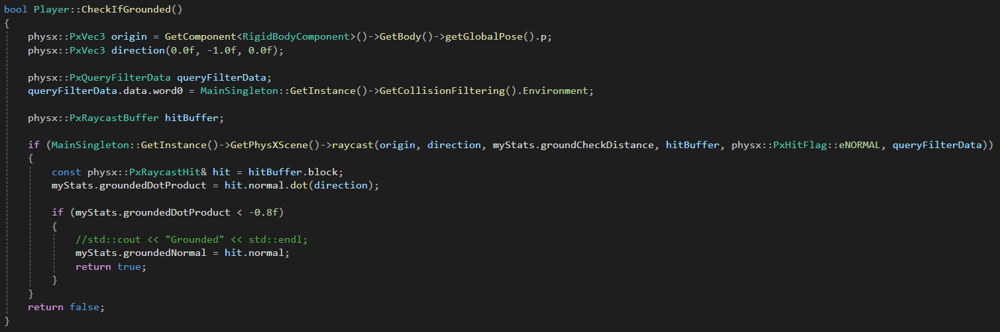
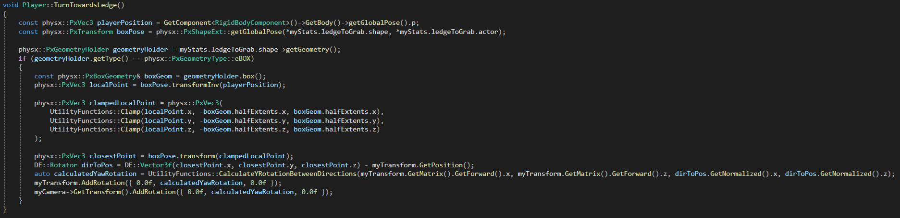
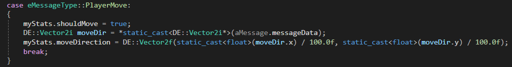
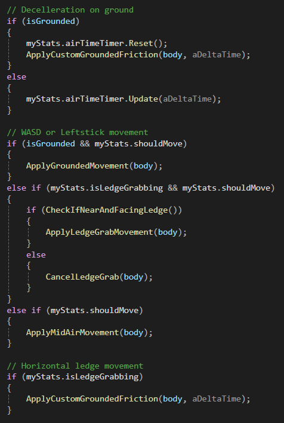
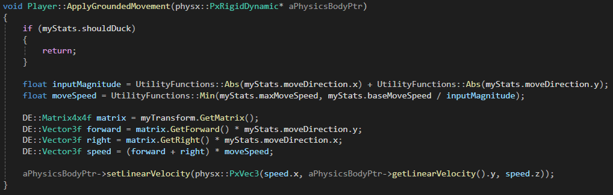
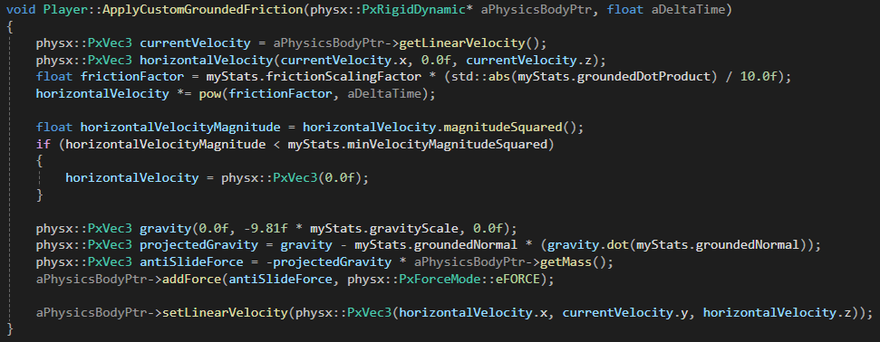
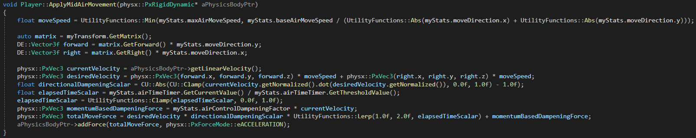
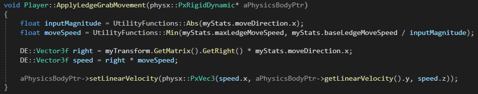

Super Mario 64 Character Controller

Introduction
I developed this project during the specialization course at The Game Assembly, where we create a focused programming project for our portfolios. I chose to make a 3D character controller for several reasons. First and foremost, I wanted to return to my roots — where my passion for games began: the Nintendo 64. Nothing has influenced my love for games more than those early days, playing Mario with my brother and childhood friends, with my mother translating clues as we searched for new stars. Those are some of my most cherished memories.
Technically, I had never created a 3D character controller outside of Unity, and I had limited experience with PhysX. This project became the perfect opportunity to both challenge myself and to build something deeply personal.
To keep the project within a realistic scope, I began by identifying which mechanics I definitely wanted to implement, which ones to cut entirely, and which would be considered “wish features” — features I’d love to include if time allowed.
Things I definitely wanted to implement:
- Controller-based movement utilising an inputmapper
- Single, double, and triple jump
- Back flip
- Duck
- Long jump
- Ground pound
Wish features:
- Ledge grab
- Ledge climb/drop off
- Ledge “traversal” (sideways movement whilst ledge grabbing, including falling off when the ledge ends)
I ended up having the time to implement all of this, with a good understanding of how I could further implement the rest of the Super Mario 64 character controller mechanics.
The controller was developed in our own game engine, Dream Engine, created by our project group.
Player Overview

An overview of the player class. The Observer inheritance is required for the inputmapper, Receive() is where all inputs are received.
PhysX Setup

This code sets up the physics body for the player character using NVIDIA PhysX. It creates a dynamic rigid body with a capsule shape, which is ideal for smooth character movement and to avoid catching on geometry edges. The capsule is configured with custom collision filtering so it only interacts with relevant layers, like the environment.
To ensure the capsule stands upright (since PhysX capsules are horizontal by default), I rotate it 90 degrees around the Z-axis. I also lock all angular motion to prevent the body from tipping over during simulation, keeping the player upright at all times.
Mass and inertia are automatically computed based on the configured mass, and the body is registered with the PhysX scene.
Finally, it's linked to the entity's RigidBodyComponent so that gameplay systems can interact with the physics representation.
Jumps
This is inside the player's Update function, where input flags along with other conditionals determine which jump should be triggered.
This is the TriggerJump function, where the jumps are done by manipulating the player's PxRigidDynamic.
This is the CheckIfGrounded function, which works by shooting a ray downwards and returning true if the surface hit is near-enough horizontal. 
Ground Pound & Ledge Climb
This is also inside the player's Update function, just below the isGrounded check shown above, thereby checking for mid-air inputs instead.
This is the triggering and releasing of the Ground Pound, mimicking how Mario does a little somersault that momentarily locks him in place mid-air before slamming downwards. In the Update function, this is the timer for the mid-air pause Mario does as he starts a Ground Pound. Once it's done, the ReleaseGroundPound function is called, which is what slams the player downwards.
After ledge grabbing (shown further down), this is how I handled the climbing of ledges, which is triggered by doing forward or jump input whilst ledge grabbing.
Ledge Grab
The contents of this GIF were all wish-features for my specialisation, and I'm pretty happy with how they turned out. Displayed is: ledge grabbing, letting go by doing backwards input, climbing up by doing forward or jump input, movement while ledgegrabbing (locked to right/left), and finally, falling off if the ledge ends.

Inside of the player's Update function, this is how the ledge grab is triggered.
This is the CheckIfNearAndFacingLedge function, which is a prerequisite to ledge grab being triggered. It works by shooting two rays, one from around knee-height and one from around chest-height. Should the upper one miss, and the lower one hit a surface that is near-enough facing the player directly (close to -1), the check returns true.
Once the ledge grab is triggered, the player is automatically rotatedto face the ledge. This step ensures that the sideways movement available during ledge grabbing happens cleanly along the ledge’s surface, rather than at an angle. Without this adjustment, the player could slowly drift away during traversal, eventually falling due to lost contact with the ledge.  The method calculates the closest point on the ledge's bounding box and uses that to determine a direction vector. It then applies a yaw rotation to both the player and the camera so they align with the ledge surface. While this solution works, it was a last-minute implementation and currently results in a somewhat choppy or abrupt turn. With more time, I would have interpolated the rotation to create a smoother, more natural transition — both visually and mechanically.
Movement
This is inside the Receive function, where all inputs from the inputmapper are handled.  Movement is enabled by myStats.shouldMove flag is set to true. The movement direction is extracted from the message and converted to floating-point values, then normalized by dividing by 100 and stored in myStats.moveDirection to control the player's movement.
Inside of the player's Update function, movement inputs are handled and different functions are called based on flags and conditionals. 
Grounded Movement
This function handles the player’s grounded movement by adjusting its physics body’s linear velocity. If the player is ducking, the function exits early. It calculates the movement speed based on the input magnitude and clamps it to the maximum allowed speed. The player’s movement direction is determined by combining the forward and right vectors of the player’s transform, which are then scaled by the movement speed. Finally, the player's linear velocity is updated, keeping the vertical velocity unchanged.
This function controls the player's movement when they are grounded but not receiving movement inputs, as well as when the player is ledge grabbing and moving sideways. In its essence, it stops the player.  It calculates the horizontal velocity and applies friction to slow the player down. If the velocity gets too low, it stops the player from sliding. The function also applies a force to counteract unwanted horizontal movement caused by gravity, which ensures the player stays grounded. Finally, the updated velocity is applied to the player's physics body, keeping the vertical movement (gravity) intact while controlling the horizontal movement.
Mid-air Movement
This function controls the player's movement while in the air.  It calculates the desired movement speed based on the player's input and applies it in the direction the player is trying to move. The function also adjusts the movement by applying dampening forces, which make the player’s movement feel more natural as they spend more time in the air. It combines the desired movement with the player's current velocity, taking into account how long they've been airborne, and then applies a force to the player’s physics body to control their movement in the air. all of this is done to create smooth and responsive air control while limiting excessive movement.
Ledge Grab Movement
This function is called when the player does sideways input while ledge grabbing and works very similarly to the regular grounded movement, except it only handles left/right movement. 
Conclusion
All in all, I am satisfied with the player controller. I would've liked to add animations and models to further realise my vision, but I'm happy with what I've learnt and feel that implementing the rest of Super Mario 64's character controller would be an easy task given more time.
The code could certainly use some refactoring, my main concern was to keep it readable enough while also being mindful of how I spend my time. My goal was to implement mechanics and make sure they work as intended, which I feel I have done fairly well.